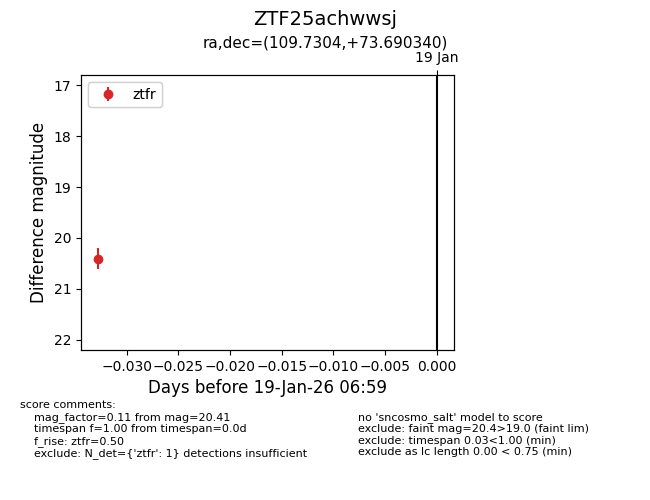
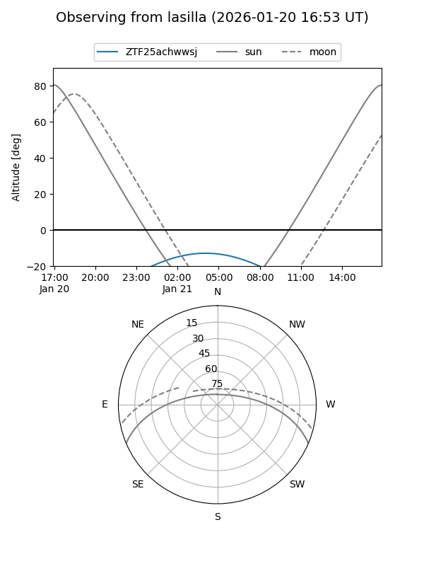
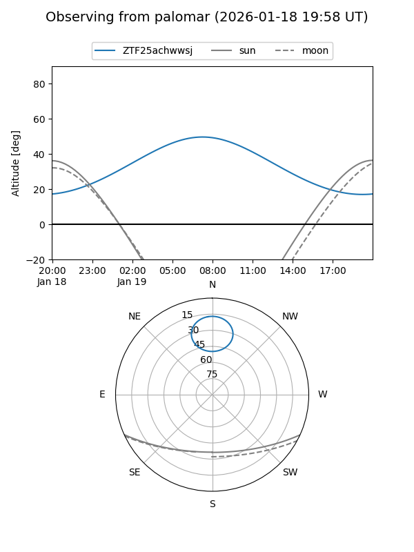

ZTF25achwwsj
Target ZTF25achwwsj at 2026-01-19 07:00
Aliases and brokers:
FINK: link
Lasair: link
ALeRCE: link
alt names
ZTF25achwwsj (ztf,fink_ztf)
Coordinates:
equatorial (ra, dec) = 109.7304,+73.69034
equatorial (HMS+DMS) = 07:18:55.30,+73:41:25.23
galactic (l, b) = (141.3173,+27.87437)
Flags:
Photometry:
last ztfr=20.41
1 ztfr detections
Lightcurve

Visibility


Additional plots